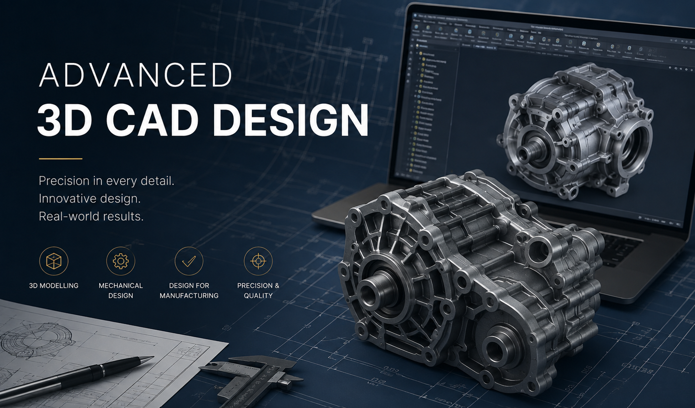
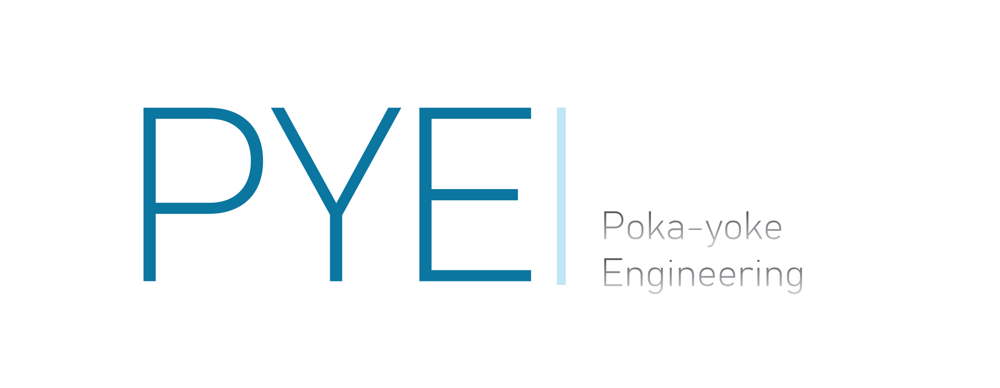
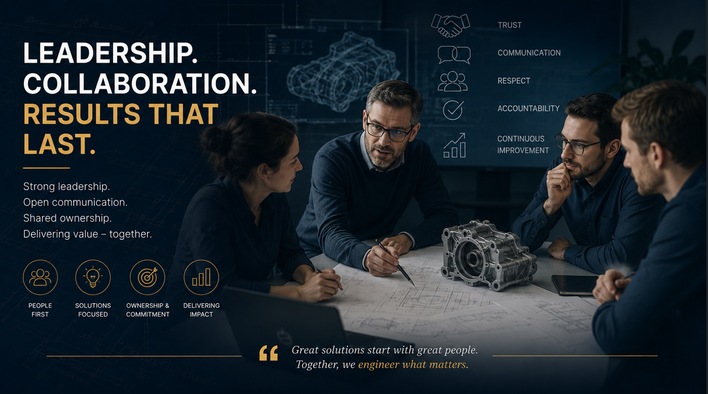
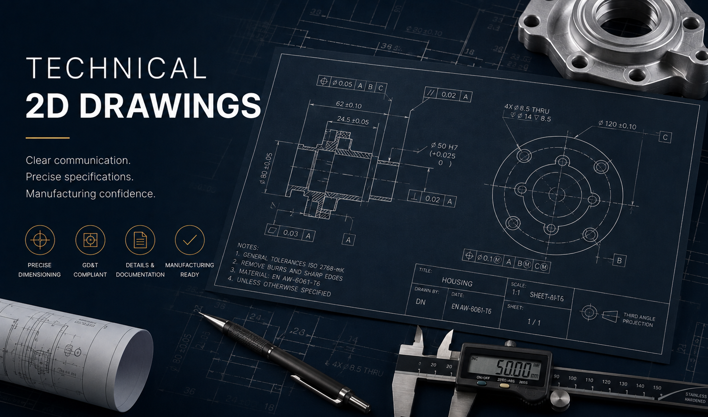
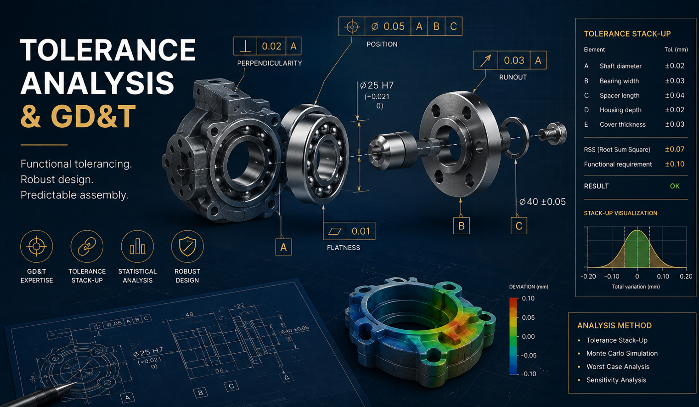

01
Konstruktion
Avancerad 3D CAD-design
Robusta komponenter och kompletta mekaniska lösningar, utvecklade med tillverkning, funktion och kvalitet i fokus.
- 3D-modellering
- Mekanisk design
- Design for manufacturing


Mechanical engineering · Product development
Senior konstruktionskompetens inom 3D CAD, ritningsframtagning och toleransanalys.
Ingenjörskap som gör skillnad
Jag hjälper industriföretag att omsätta komplexa krav till genomtänkta, tillverkningsbara lösningar.

Konstruktion
Robusta komponenter och kompletta mekaniska lösningar, utvecklade med tillverkning, funktion och kvalitet i fokus.

Dokumentation
Tydliga, precisa och produktionsklara ritningar som minskar osäkerhet och skapar ett effektivt flöde till tillverkning.

Kvalitetssäkring
Funktionell toleranssättning och analys som säkerställer monterbarhet, kvalitet och förutsägbart resultat.
Har du en teknisk utmaning?
Berätta kort om behovet, projektet eller förstärkningen ni söker – så tar vi ett första förutsättningslöst samtal.
Skapa kontakt ↗